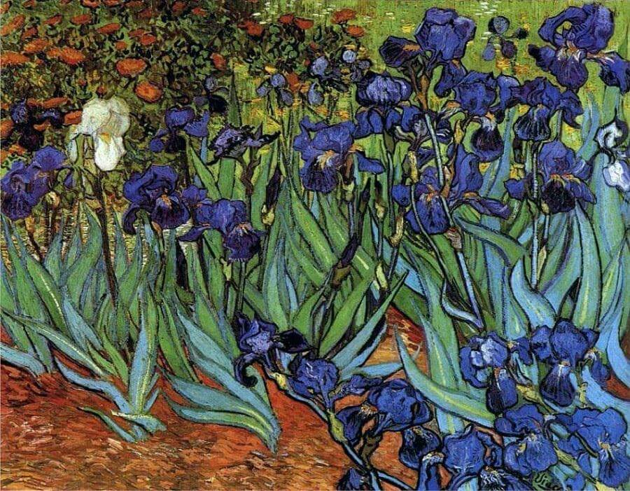

Irises

The story of Irises
On May 8, 1889, Vincent Van Gogh committed himself to the asylum at Saint Paul-de-Mausole in Saint-Remy, France after many instances of hospitalization and self-mutilation. During his stay he painted some 130 paintings with the surrounding gardens and clinic becoming his main subjects for painting. Among these were the famous The Starry Night and Irises.
Inspired by the nature surrounding him, Van Gogh began his work on Irises within the first week of his stay at the asylum. Irises was most likely influenced by Japanese woodblock prints which were produced beginning in the 17th century. Like many artists of his time Van Gogh was influenced by the Japanese works. The use of black contours in Irises is a typical element of Japanese woodblock prints. It helped to reinforce the expressive power of the painting.
There are no known drawings of the piece, probably because Van Gogh did not consider it a masterpiece but simply a study. Upon receiving the canvas Van Gogh’s brother, Theo, submitted it, along with The Starry Night, to the Salon des Independants in September of 1889.There are no known drawings of the piece, probably because Van Gogh did not consider it a masterpiece but simply a study. Upon receiving the canvas Van Gogh’s brother, Theo, submitted it, along with The Starry Night, to the Salon des Independants in September of 1889.
Irises is on the list of the most expensive paintings ever sold, selling for 54 million dollars in 1987. Currently Irises is on display at The Getty Center in Los Angeles, California.
Some secrets of "Irises"
The museum refused to disclose the price it paid for Van Gogh's masterpiece, citing its customary non-disclosure policy.
The painting has been bought and sold a dozen times, the last being a 1990 purchase by the J. Paul Getty Museum in Malibu, Calif., where the artwork remains to the present day.
Each iris petal in the "Irises" painting is unique, featuring different shading, shape and size. Only one blossom, however, is a completely different color.
"Irises" was the first painting Van Gogh started after arriving at the asylum. The flowers were growing in a garden in the small outdoor area where the artist was allowed to stroll and sit.
Vase with Irises
Gogh created more paintings with irises as the main subject.In the Metropolitan Museum of Art hangs the painting Irises and the Van Gogh Museum in Amsterdam has another version of a vase with irises.
Video that resume all the informations about this painting:
”I experience a period of frightening clarity in those moments when nature is so beautiful. I am no longer sure of myself, and the paintings appear as in a dream.”